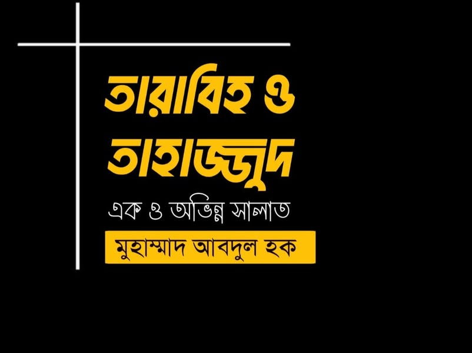

তারাবি এবং তাহাজ্জুদ এক ও অভিন্ন সালাত
১৬ মার্চ, ২০২৩
“তারাবি এবং তাহাজ্জুদ এক ও অভিন্ন সালাত”
গতদিন শাহ আনওয়ার কাশ্মিরি রাহ-এর রেফারেন্সে বলেছিলাম যে, তারাবি ও তাহাজ্জুদ একই সালাত। কিছু ভাই তখন আপত্তি করেছিলেন। আজ অন্যান্য মুহাদ্দিসের বক্তব্য সহ বিস্তারিত জানার চেষ্টা করব, ইনশাআল্লাহ। (পোস্ট দীর্ঘ হওয়ায় দুঃখিত)
(১)
প্রথমে আল্লামা কাশ্মিরি রাহ-এর পূর্ণ বক্তব্য ও দলিল দেখে নেয়া যাক। তিনি লেখেন—
والمختار عندي أنهما واحدٌ وإن اختلفت صفتاهما، كعدم المواظبة على التراويح، وأدائها بالجماعة، وأدائها في أول اللَّيل تارةً وإيصالها إلى السَّحَر أُخرى. بخلاف التهجُّد فإنه كان في آخِر الليل ولم تكن فيه الجماعة. وجَعْلُ اختلافِ الصفات دليلا على اختلاف نوعيهما ليس بجيِّدٍ عندي، بل كانت تلك صلاةً واحدةً، إذا تقدَّمت سُمِّيت باسم التراويح، وإذا تأخَّرت سُمِّيت باسم التهجُّد.
আমার নিকট পছন্দনীয় রায় হচ্ছে তারাবি ও তাহাজ্জুদ দু'টি একই সালাত। যদিও তাদের বৈশিষ্ট্যাবলী ভিন্ন ভিন্ন হয়। যেমন তারাবি সর্বদা আদায় না করা এবং তা জামাআতে আদায় করা। কখনো তা রাতের প্রথমভাগে আদায় করে নেয়া আবার কখনো সাহরি পর্যন্ত দীর্ঘ করা। তাহাজ্জুদ তার বিপরীত। এটি হতো রাতের শেষভাগে এবং তাতে কোনো জামাআত ছিল না। বৈশিষ্টের ভিন্নতাকে আলাদা দু'টি প্রকারের দলিল বানানো আমার মতে শক্তিশালী নয়; বরং এটি ছিল একই সালাত (দু'টি নাম)। আগে পড়লে নাম হবে তারাবি। পরে পড়লে নাম হবে তাহাজ্জুদ। [ফায়জুল বারি-২/৫৬৭]
আল্লামা কাশ্মিরি অন্যত্র বলেন—
ولا مناص من تسليم أن تراويحه كانت ثمانية ركعات و لم يثبت في رواية من الروايات أنه صلى التراويح والتهجد على حدة في رمضان بل طول التراويح، وبين التراويح والتهجد في عهده لم يكن فرق في الركعات بل في الوقت والصفة أي التراويح تكون بالجماعة في المسجد بخلاف التهجد، وإن الشروع في التراويح يكون في أول الليل وفي التهجد في آخر الليل.
এ কথা স্বীকার না করে উপায় নেই যে, রাসূল সাল্লাল্লাহু আলাইহি ওয়া সাল্লামের তারাবি ছিল আট রাকাআত।
আর তিনি ﷺ রমজানে তারাবি ও তাহাজ্জুদ আলাদাভাবে পড়েছেন বলে কোনো একটি বর্ণনায়ও প্রমাণিত নেই। বরঞ্চ, তিনি তারাবিকে দীর্ঘ করে পড়তেন। রাসূলের যুগে তারাবি ও তাহাজ্জুদের রাকাআতে কোনো পার্থক্য ছিল না; পার্থক্য ছিল স্রেফ সময় ও বৈশিষ্ট্যের ক্ষেত্রে। অর্থাৎ তারাবি জামাআতে মসজিদে আদায় হতো। তাহাজ্জুদ তার বিপরীত। তারাবি রাতের প্রথমভাগে আরম্ভ হতো আর তাহাজ্জুদ শেষভাগে। [ আল-আরফুশ শাজি- ২/২০৮ ]
অনেকে আবার মনে করেন এটি তার বিচ্ছিন্ন মত। তাহলে আজ আমরা খুঁজে দেখব যে, এ মতের অনুসারী মুহাদ্দিস ইমামগন আছেন কিনা।
★ বিষয়টি প্রমাণিত হলে প্রাসঙ্গিক আরেকটি বিষয় প্রমাণ হয়ে যায়। তা হলো, ‘বুখারি-মুসলিমে বর্ণিত আয়েশা রা-এর হাদিস তারাবি সংক্রান্ত’ দাবি সঠিক কি না।’ প্রথমে হাদিস দেখে নেয়া যাক—
عن أبي سلمة بن عبد الرحمن أنه سأل عائشة : كيف كانت صلاة رسول الله في رمضان؟ فقالت: ما كان يزيد في رمضان ولا في غيره على إحدى عشرة ركعة. يصلي أربعا فلا تسأل : عن حسنهن وطولهن، ثم يصلي أربعا فلا تسأل عن حسنهن وطولهن، ثم يصلي ثلاثا.
আবু সালামাহ ইবনু আব্দির রহমান (রাঃ) থেকে বর্ণিত।
তিনি আয়িশাহ (রাঃ)-কে জিজ্ঞেস করেন, রমাযান মাসে আল্লাহর রাসূল (সাল্লাল্লাহু ‘আলাইহি ওয়া সাল্লাম)-এর সলাত কেমন ছিল? তিনি বললেন, আল্লাহর রাসূল (সাল্লাল্লাহু ‘আলাইহি ওয়া সাল্লাম) রমাযান মাসে এবং অন্যান্য সময় (রাতের বেলা) এগার রাকাআতের অধিক সলাত আদায় করতেন না। তিনি চার রাকাআত সলাত আদায় করতেন। তুমি সেই সলাতের সৌন্দর্য ও দীর্ঘতা সম্পর্কে প্রশ্ন করো না। তারপর চার রাকাআত সলাত আদায় করতেন, এর সৌন্দর্য ও দীর্ঘতা সম্পর্কে প্রশ্ন করো না। অতঃপর তিনি তিন রাকাআত (বিতর) সলাত আদায় করতেন। [ বুখারি-১১৪৭, মুসলিম-৭৩৮ ]
উপর্যুক্ত হাদিস তাহাজ্জুদ সংক্রান্ত— এ ব্যাপারে কারও দ্বিমত নেই। কিন্তু এটি একইসাথে তারাবি সংক্রান্ত বললে কিছু লোক তেড়ে আসেন। তাদের ব্যবচ্ছেদ করতে আমরা প্রথমেই উল্লেখ করব জগদ্বিখ্যাত ইমাম ইবনু হাজার আসকালানি রাহ-এর বক্তব্য।
(২)
ইমাম ইবনু হাজার আসকালানি রাহ. ‘বিশ’ রাকাআত তারাবি সংক্রান্ত বর্ণনার সমালোচনা করতে যেয়ে বলেন-
وأما ما رواه بن أبي شيبة من حديث بن عباس كان رسول الله صلى الله عليه وسلم يصلي في رمضان عشرين ركعة والوتر فإسناده ضعيف وقد عارضه حديث عائشة هذا الذي في الصحيحين مع كونها أعلم بحال النبي صلى الله عليه وسلم ليلا من غيرها والله أعلم.
ইবনু আব্বাস রা. থেকে ইবনু আবি শাইবা'র যে বর্ণনা- রাসূল সা- রমজানে বিশ রাকাত (তারাবিহ) ও বিতর পড়েছেন- এর সনদ দূর্বল। আর তা বুখারি-মুসলিমে আয়েশা রা-এর বর্ণিত হাদিসের (আট রাকাতের) খেলাফ। এতদসত্ত্বেও তিনি রাসূলের রাতের হালতের ব্যাপারে অন্যের চেয়ে ভালো জ্ঞান রাখেন [ ফাতহুল বারি-৪/২৫৪ ]
এত্থেকে দু'টি বিষয় প্রমাণ হচ্ছ—
★ তরাবি ও তাহাজ্জুদ একই সালাত। নাহলে ইবনু হাজার কীভাবে তাহাজ্জুদের হাদিসের কারণে তারাবির হাদিসকে দুর্বল আখ্যা দিতে পারেন। এটি তখনই সম্ভব, যখন দুই সালাতকে এক ও ভিন্ন মানা হবে।
★ ‘আয়েশা রা-এর হাদিস তারাবি সংক্রান্ত’ দাবি সঠিক। নাহলে তিনি ইবনু আব্বাসের মুকাবেলায় আয়েশার হাদিস পেশ করতেন না।
(৩)
হানাফি অন্যতম মুহাদ্দিস ইমাম যাইলাঈ রাহ.। তিনি ‘বিশ’ রাকাআত হাদিসের ব্যাপারে বলেন—
وهو معلول بابن أبي شيبة إبراهيم بن عثمان جد الإمام أبي بكر بن أبي شيبة وهو متفق على ضعفه ولينه بن عدي في الكامل ثم إنه مخالف للحديث الصحيح عن أبي سلمة بن عبد الرحمن أنه سأل عائشة رضي الله عنها كيف كانت صلاة رسول الله في رمضان قالت ما كان يزيد في رمضان ولا في غيره على إحدى عشرة ركعة.
ইবরাহিম বিন উসমানের কারণে হাদিসটি ত্রুটিযুক্ত। তিনি সর্বসম্মতিক্রমে দূর্বল রাবি। আর এ হাদিস আয়েশা রাহ. থেকে বর্ণিত সহীহ হাদিসের খেলাফ। আয়েশা রা. বলেন- রাসূল সা- রমজানে ও তার বাহিরে (বিতরসহ) এগারো রাকাআতের অধিক সালাত পড়তেন না। [ নাসবুর রা'য়া-২/১৫৩]
এখান থেকেও দু'টি বিষয় প্রমাণ হচ্ছে—
★ তারাবি ও তাহাজ্জুদ একই সালাত। নাহলে ইমাম যায়লাঈ রাহ. কীভাবে তাহাজ্জুদের হাদিসের কারণে তারাবির হাদিসকে দুর্বল আখ্যা দিতে পারেন।
★ ‘আয়েশা রা-এর হাদিস তারাবি সংক্রান্ত’ দাবি সঠিক। নাহলে যায়লাঈ ইবনু আব্বাসের মুকাবেলায় আয়েশার হাদিস পেশ করতেন না।
(৪)
শামসুদ্দিন বিরমাবি (জন্ম- ৭৬৩ হিজরি)। তিনি তার রচিত আল-জামিউস সাহিহ-এর ব্যাখ্যাগ্রন্থে প্রথমে আয়েশা রা থেকে বর্ণিত হাদিসটি উল্লেখ করেন এভাবে—
٢٠١٣ - حَدَّثَنَا إِسْمَاعِيلُ، قَالَ: حَدَّثَنِي مَالكٌ، عَنْ سَعِيدٍ الْمَقْبُرِيِّ، عَنْ أَبي سَلَمَةَ بن عَبْدِ الرَّحْمَنِ: أَنَّهُ سَأَلَ عَائِشَةَ رَضيَ الله عَنْها: كيْفَ كَانَتْ صَلَاةُ رَسُولِ الله - صلى الله عليه وسلم - فِي رَمَضَانَ؟ فَقَالَتْ: مَا كَانَ يَزِيدُ فِي رَمَضَانَ، وَلَا فِي غَيْرها عَلَى إِحدَى عَشْرَةَ رَكعَةً، يُصَلِّي أَرْبَعًا، فَلَا تَسَلْ عَنْ حُسْنِهِنَّ وَطُولهِنَّ، ثُمَّ يُصَلِّي أَرْبَعًا، فَلَا تَسَلْ عَنْ حُسْنِهِنَّ وَطُولهِنَّ، ثُمَّ يُصَلِّي ثَلَاثًا.
রাসূল ﷺ রমজানে বা রমজানের বাহিরে এগারো রাকাআতের অধিক সালাত পড়তেন না....
এরপর আল্লামা বিরমাবি রাহ. বলেন—
...إنَّ هذا معارَضٌ بما رُوي أنَّه - صلى الله عليه وسلم - قامَ بالنَّاس عشْرين ركعةً ليلتَين.
রাসূল ﷺ লোকজন নিয়ে দুই রাত্রে বিশ রাকাআত পড়ার যে বর্ণনা, আয়েশা রা-এর এ হাদিসটি তার সম্পূর্ণ বিপরীত। [ আল-লামিউস সাবিহ বি-শারহিল জামিইস সাহিহ-৬/৪৭৮]
এবার বলুন, তারাবি-তাহাজ্জুদ যদি এক না হয় এবং আয়েশা রা-এর হাদিস যদি তারাবি সংক্রান্ত না হয়, তাহলে তিনি কীভাবে তারাবির হাদিসের সাথে তার কম্পেয়ার করলেন?
(৫)
শিহাবুদ্দিন আল-বুসিরি (মৃত্যু- ৮৪০ হিজরি)। তিনি একাধিক সনদে ইবনু আব্বাস রা-এর হাদিস উল্লেখ করেছেন—
عَنِ ابْنِ عَبَّاسٍ- رَضِيَ اللَّهُ عَنْهُمَا- "أَنّ رَسُولَ اللَّهِ - صَلَّى اللَّهُ عَلَيْهِ وَسَلَّمَ - كَانَ يُصَلِّي فِي رَمَضَانَ عِشْرِينَ رَكْعَةً وَالْوِتْرَ".
ইবনু আব্বাস রা. থেকে বর্ণিত, রাসূল ﷺ রমজানে বিশ রাকাআত তারাবি এবং বিতর পড়তেন।
এরপর মন্তব্য করেন যে—
وَمَدَارُ أَسَانِيدِهِمْ عَلَى إِبْرَاهِيمَ بْنِ عُثْمَانَ أَبِي شَيْبَةَ، وَهُوَ ضَعِيفٌ، وَمَعَ ضَعْفِهِ مُخَالِفٌ لِمَا رَوَاهُ مُسْلِمٌ فِي صَحِيحِهِ مِنْ حَدِيثِ عَائِشَةَ قَالَتْ: "كَانَتْ صَلَاةَ رَسُولِ اللَّهِ - صَلَّى اللَّهُ عَلَيْهِ وَسَلَّمَ - بِاللَّيْلِ فِي رَمَضَانَ وَغَيْرِهِ ثَلَاثَ عشرة ركعة منها ركعتي الْفَجْرِ.
ইবনু আব্বাস থেকে বিশ রাকাত বর্ণনার সকল সনদের মাদার-কেন্দ্র হচ্ছেন আবু শাইবা। তিনি দুর্বল রাবি। আর এ দুর্বলতাসত্ত্বেও এটি সহিহ মুসলিমে আয়েশা রা. থেকে বর্ণিত হাদিসের খেলাফ। আয়েশা বলেন— “ রমজানের রাতে ও রমজান ছাড়াও রাসূল ﷺ এর সালাত ছিল তেরো রাকাআত।” ‘তন্মধ্যে দুই রাকাআত ফজরের সুন্নাত’। (অর্থাৎ তারাবি বিতরসহ এগারো রাকাআত)
[ ইতহাফুল খিয়ারাতিক মাহারা বি-যাওয়াইদিল মাসানিদিল আশারা- ২/৩৮৩-৩৮৪ ]
আবারও একই প্রশ্ন করতে চাই—
‘তারাবি-তাহাজ্জুদ যদি এক না হয় এবং আয়েশা রা-এর হাদিস যদি তারাবি সংক্রান্ত না হয়, তাহলে তিনি কীভাবে তারাবির হাদিসের সাথে তার কম্পেয়ার করলেন’?
(৬)
ইমাম জালালুদ্দিন সুয়ুতি রাহ.। তিনি ইবনু হাজারের রেফারেন্সে বিশ রাকাআত তারাবির হাদিস দুর্বল আখ্যা দেয়ার পর বলেন—
فَالْحَاصِلُ أَنَّ الْعِشْرِينَ رَكْعَة لَمْ تَثْبُتْ مِنْ فِعْلِهِ صَلَّى اللَّهُ عَلَيْهِ وَسَلَّمَ، وَمَا نَقَلَهُ عَنْ صَحِيحِ ابْنِ حِبَّانَ غَايَةٌ فِيمَا ذَهَبْنَا إِلَيْهِ مِنْ تَمَسُّكِنَا بِمَا فِي الْبُخَارِيِّ عَنْ عائشة أَنَّهُ كَانَ لَا يَزِيدُ فِي رَمَضَانَ وَلَا فِي غَيْرِهِ عَلَى إِحْدَى عَشْرَةَ ; فَإِنَّهُ مُوَافِقٌ لَهُ مِنْ حَيْثُ إِنَّهُ صَلَّى التَّرَاوِيحَ ثَمَانِيًا ثُمَّ أَوْتَرَ بِثَلَاثٍ، فَتِلْكَ إِحْدَى عَشْرَةَ.
মোদ্দা কথা, রাসূল ﷺ এর আমল থেকে বিশ রাকাআত প্রমাণিত নয়। ইবনু হাজার সহিহ ইবনু হিব্বানের যে বর্ণনা নকল করেছেন, তা আমাদের অভিমতের অর্থাৎ আয়েশা রা. থেকে বর্ণিত বুখারির হাদিস— ‘রাসূল ﷺ রমজানে বা রমজান ছাড়াও এগারো রাকাআতের অধিক সালাত পড়তেন না’ দ্বারা দলিলের একটা সীমা বুঝাচ্ছে। (অর্থাৎ এগারো থেকে তারাবির সীমা ‘আট’ উদ্দেশ্য) ইবনু হিব্বানের এ বর্ণনা তার সাথে সামঞ্জস্যপূর্ণ যে, রাসূল ﷺ তারাবি পড়েছেন আট রাকাআত। এরপর বিতর তিন রাকাআত। এই হলো এগারো রাকাআত। [ আল-হাবি লিল ফাতাওয়া-১/৪১৫-৪১৬ ]
এখানে সম্ভাব্য একটি আপত্তি উঠতে পারে যে, জাবির রা. থেকে ইবনু হিব্বানে বর্ণিত হাদিসের সনদ তো দুর্বল।
জবাবে বলল, এ হাদিসটি ইবনু হাজারের নিকট সহিহ বা হাসান। জাহাবির নিকট সনদ মধ্যম পর্যায়ের।
উপরন্তু এ হাদিস এখানে আলোচ্য বিষয় নয়। মূল উদ্দেশ্য আয়েশা রা-এর হাদিস। ইমাম সুয়ুতি যদি তারাবি-তাহাজ্জুদ ভিন্ন সালাত মনে করতেন, তাহলে কীভাবে তিনি আয়েশা রা-এর হাদিস দ্বারা আট রাকাআত তারাবির প্রমাণ দিচ্ছেন? সুতরাং ভেবে দেখুন।
(৭)
প্রসিদ্ধ হানাফি আল্লামা নিমাভী রাহ.। তিনি তাঁর বিখ্যাত কিতাব আসারুস সুনানে অধ্যায় রচনা করেছেন
‘باب التراويح بثمان ركعات’.
অর্থাৎ ‘আট রাকাআত তারাবির অধ্যায়’। এরপর তিনি আয়েশা রাহ. বর্ণিত হাদিস অতঃপর জাবির রা. থেকে বর্ণিত হাদিস একই অধ্যায়ের অন্তর্ভুক্ত করেন।
باب التراويح بثمان ركعات.
٧٧٢ - أبي سلمة بن عبد الرحمن أنه سأل عائشة : كيف كانت صلاة رسول الله في رمضان؟ فقالت: ما كان يزيد في رمضان ولا في غيره على إحدى عشرة ركعة. يصلي أربعا فلا تسأل : عن حسنهن وطولهن، ثم يصلي أربعا فلا تسأل عن حسنهن وطولهن، ثم يصلي ثلاثا، فقلت: يا رسول الله، أتنام قبل أن توتر؟ قال: "يا عائشة، إن عَيْنَيَّ تنامان ولا ينام قلي". رواه الشيخان.
আয়েশা রা. বলেন— ‘রাসূল ﷺ রমজানে বা রমজানের বাহিরে এগারো রাকাআতের অধিক সালাত পড়তেন না।’
۷۷۳ - وعن جابر بن عبد الله قال صلى بنا رسول الله ﷺ في شهر رمضان ثمان ركعات و أوتر. فلما كانت القابلة اجتمعنا في المسجد ورجونا أن يخرج فلم يخرج، فلم نزل فيه حتى أصبحنا، ثم دخلنا فقلنا: يا رسول الله، اجتمعنا البارحة في المسجد ورجونا أن تصلي بنا، فقال: "إني خشيت أن يكتب عليكم". رواه الطبراني.
জাবির রা. বলেন— ‘রাসূল ﷺ আমাদের নিয়ে রমজানে আট রাকাআত সালাত এবং বিতর পড়লেন।’
[ আসারুস সুনান- ২৮৭ নং পৃষ্ঠা ]
(৮)
জগদ্বিখ্যাত হানাফি মুহাক্কিক, মুহাদ্দিস, ফকিহ, ইমাম কামাল ইবনুল হুমাম রাহ.। তিনি তার ‘হেদায়া'র বিখ্যাত ভাষ্যগ্রন্থে লেখেন—
وَقَدَّمْنَا فِي بَابِ النَّوَافِلِ عَنْ أَبِي سَلَمَةَ بْنِ عَبْدِ الرَّحْمَنِ «سَأَلْتُ عَائِشَةَ - رَضِيَ اللَّهُ عَنْهَا - كَيْفَ كَانَتْ صَلَاةُ رَسُولِ اللَّهِ - صَلَّى اللَّهُ عَلَيْهِ وَسَلَّمَ - فِي رَمَضَانَ؟ فَقَالَتْ: مَا كَانَ يَزِيدُ فِي رَمَضَانَ وَلَا غَيْرِهِ عَلَى إحْدَى عَشْرَةَ رَكْعَةً» الْحَدِيثُ.
আয়েশা রা. বলেন— রাসূল ﷺ রমজানে বা রমজানের বাহিরে এগারো রাকাআতের অধিক সালাত পড়তেন না।’
এরপর বলেন—
وَأَمَّا مَا رَوَى ابْنُ أَبِي شَيْبَةَ فِي مُصَنَّفِهِ وَالطَّبَرَانِيُّ وَعِنْدَ الْبَيْهَقِيّ مِنْ حَدِيثِ ابْنِ عَبَّاسٍ «أَنَّهُ - صَلَّى اللَّهُ عَلَيْهِ وَسَلَّمَ - كَانَ يُصَلِّي فِي رَمَضَانَ عِشْرِينَ رَكْعَةً سِوَى الْوِتْرِ» فَضَعِيفٌ بِأَبِي شَيْبَةَ إبْرَاهِيمَ بْنِ عُثْمَانَ جَدِّ الْإِمَامِ أَبِي بَكْرِ بْنِ أَبِي شَيْبَةَ مُتَّفَقٌ عَلَى ضَعْفِهِ مَعَ مُخَالِفَتِهِ لِلصَّحِيحِ.
ইবনু আব্বাস রা-এর হাদিস— ‘রাসূল ﷺ রমজানে বিতর ছাড়া বিশ রাকাআত সালাত আদায় করতেন।’— এটি আবু শাইবার কারণে দুর্বল। তিনি সর্বসম্মতিক্রমে দুর্বল রাবি। উপরন্তু এটি সহিহ বর্ণনার খেলাফ বা বিরোধী। [ ফাতহুল কাদির-১/৪৬৭]
এবার বিগত প্রশ্নগুলো আরেকবার স্মরণ করুন,
প্রথমত, তারাবি-তাহাজ্জুদ একই সালাত না হলে ইবনুল হুমাম কীভাবে তাহাজ্জুদের হাদিস দ্বারা তারাবির হাদিসকে দুর্বল আখ্যা দিলেন।
দ্বিতীয়ত, আয়েশা রা-এর হাদিস তারাবি সংক্রান্ত না হলে তিনি কীভাবে ইবনু আব্বাসের হাদিসের সাথে তার কম্পেয়ার করলেন?
সুতরাং উপর্যুক্ত প্রমাণাদি থেকে এটি দিবালোকের ন্যায় পরিষ্কার যে, মুহাদ্দিসগনের নিকট তারাবি এবং তাহাজ্জুদ এক ও অভিন্ন সালাতের দুই নাম এবং আয়েশা রা-এর হাদিস তারাবি সংক্রান্ত বলা ভুল নয়; বরং সম্পূর্ণ সঠিক। হানাফি বা শাফিই সকল মুহাদ্দিসে কেরাম এটিই বুঝেছেন। কিন্তু ভিন্নমতাবলম্বীদের স্রেফ বিরোধিতার উদ্দেশ্যে বিরোধিতা করতে যেয়ে আমরা এমন সব অসার যুক্তি-তর্কের আবির্ভাব ঘটাই, যার কোনো ভ্যালুই নেই; বরঞ্চ চমর হাস্যকর।
আল্লাহ আমাদের সহিহ সমঝ দান করুন।
